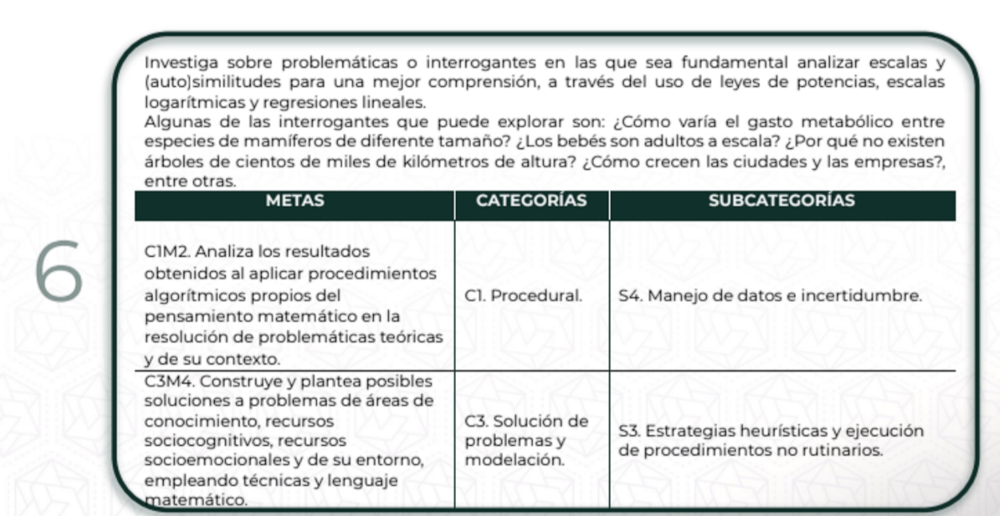

Proyecto Matemático NEM – Progresión 6
“Consumo de agua por colonia: ¿quién consume más y por qué?”
🧩 Progresión utilizada

🎯 Propósito formativo
Analizar el comportamiento del consumo doméstico promedio de agua por colonia y alcaldía, usando herramientas
matemáticas como regresiones y escalas para desarrollar pensamiento crítico, modelación matemática y conciencia
social sobre el uso sostenible del recurso.
📚 Vinculación curricular (NEM)
| Metas |
Categoría |
Subcategoría |
| C1M2: Analiza procedimientos matemáticos |
C1. Procedural |
S4. Manejo de datos e incertidumbre |
| C3M4: Propone soluciones a problemas sociales |
C3. Solución de problemas y modelación |
S3. Estrategias heurísticas y ejecución no rutinaria |
⏳ Tiempo estimado
3 dias (3 sesiones):
- Dia 1: Contextualización, problematización, exploración inicial.
- Dia 2: Análisis estadístico, regresión, interpretación de resultados.
- Dia 3: Conclusiones, propuesta visual.
📆 Cronograma de trabajo
| Día |
Sesión |
Actividad principal |
Producto esperado |
| Día 1 |
Sesión 1 |
Presentación del proyecto, problematización del uso del agua, formación de equipos, exploración del
dataset. |
Bitácora inicial del equipo y esquema de análisis |
| Día 2 |
Sesión 2 |
Análisis matemático: gráficos, regresión lineal/logarítmica, comparación de colonias. |
Gráficas, tabla comparativa, primeros hallazgos |
| Día 3 |
Sesión 3 |
Elaboración de conclusiones, redacción del informe, diseño de infografía o cartel. |
Informe final, presentación visual o exposición en equipo |
📍 Espacio físico
- Aula con acceso a computadoras (o laboratorio de cómputo).
- Espacio para trabajo en equipos colaborativos.
🧰 Materiales y recursos
- Dataset de consumo de agua (portal de datos abiertos CDMX).
- Acceso a Internet para consultas y descargas.
- Hojas y lapiz.
📊 Variables clave del dataset
- consumo_prom_dom: Consumo doméstico promedio.
- colonia, alcaldia: Ubicación.
- anio, bimestre, fecha_referencia: Dimensión temporal.
- indice_des: Indicador de desarrollo socioeconómico.
- latitud, longitud: Georreferenciación para mapas.
- consumo_total_dom: Consumo total por zona.
❓ Preguntas detonadoras
- ¿Qué colonias presentan mayor consumo de agua?
- ¿Existe una relación entre el desarrollo socioeconómico y el consumo?
- ¿Qué acciones podrían reducir el consumo sin afectar el bienestar?
🧠 Actividades por etapa
| Etapa |
Actividad |
| 1. Introducción |
Reflexión colectiva sobre el consumo de agua y revisión de la progresión matemática. |
| 2. Exploración |
Lectura y limpieza del dataset, visualización inicial. |
| 3. Análisis |
Aplicación de regresión lineal/logarítmica y clasificación por alcaldía. |
| 4. Interpretación |
Discusión en equipos sobre hallazgos y anomalías. |
| 5. Propuesta |
Redacción de recomendaciones y creación de infografía. |
📝 Productos esperados
- Informe escrito con gráficos y análisis matemático.
- Infografía o cartel para la comunidad escolar.
- Presentación oral con hallazgos clave y propuestas.
🤝 Participación del estudiantado
El proyecto fomenta la autonomía, colaboración, uso de tecnología, pensamiento crítico y aplicación del
conocimiento matemático para resolver una problemática real. Los equipos toman decisiones sobre cómo comunicar
sus resultados y proponer acciones concretas.
🧠 Diversidad de estilos de aprendizaje
El proyecto está diseñado para considerar distintas formas en que el estudiantado aprende, incluyendo:
- Visual: Uso de gráficas, mapas, infografías y representación de datos que permiten
comprender el fenómeno a partir de lo observable.
- Auditivo: Discusiones grupales, presentación oral de resultados, intercambio de ideas en
plenaria.
- Kinestésico: Actividades manuales como elaboración de carteles, manipulación de datos,
análisis práctico de los datos presentados.
Estas estrategias permiten que el aprendizaje sea accesible y significativo para todo el alumnado, favoreciendo
la participación activa desde distintas fortalezas individuales.
📏 Criterios de evaluación
| Criterio |
Evidencia |
| Comprensión matemática |
Modelos y conceptos aplicados correctamente. |
| Interpretación crítica |
Hallazgos relevantes y explicados con claridad. |
| Propuesta pertinente |
Acciones viables y fundamentadas. |
| Comunicación efectiva |
Claridad visual y textual en productos entregables. |
✅ Beneficios del proyecto
- Promueve el análisis matemático aplicado a una problemática real y cercana.
- Desarrolla habilidades en el uso de herramientas digitales, estadísticas y de comunicación.
- Fomenta el pensamiento crítico y la conciencia ambiental entre estudiantes.
- Potencia el trabajo en equipo y el respeto a diferentes formas de participación.
- Es adaptable a diferentes contextos escolares (urbano o rural) y a distintos niveles de habilidad.
- Puede convertirse en parte de una plataforma digital o espacio web para replicarse o compartirse con otras
comunidades.
⚠️ Limitaciones del proyecto
- Requiere acceso a computadoras con software de análisis o conexión a internet.
- Puede implicar una curva de aprendizaje inicial en el manejo de datos.
- El dataset utilizado puede estar desactualizado o no reflejar completamente la realidad local.
- La interpretación de los resultados debe guiarse cuidadosamente para evitar conclusiones erróneas.
- Si no se cuenta con tiempo suficiente, los productos visuales pueden quedar limitados.
🧪 Forma de Evaluación: Comparación de Resultados
Como parte del proceso de evaluación, el estudiantado analizará y comparará los resultados obtenidos a través de
diferentes modelos matemáticos
(regresión lineal y modelo de potencia logarítmico) aplicados a los mismos datos. Esto permitirá:
- Identificar qué modelo se ajusta mejor a la realidad observada en el dataset.
- Interpretar las diferencias entre modelos y sus implicaciones en términos del consumo de agua.
- Justificar la elección del modelo más adecuado con base en evidencia gráfica y numérica.
Se evaluará la capacidad del equipo para interpretar, comparar y argumentar con base en los resultados
obtenidos, no solo en términos matemáticos,
sino también en cuanto a su relevancia para proponer soluciones sustentables.
🔗 Conjunto de datos
Consulta el conjunto de datos oficial en:
Portal de Datos Abiertos de CDMX –
Consumo de Agua
Ir al proyecto